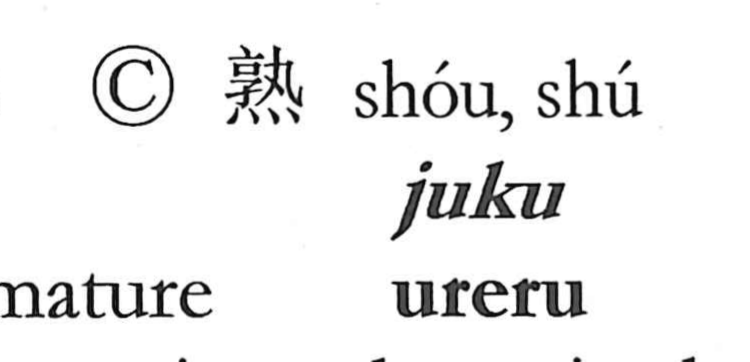

熟

Kun: ureru | On: juku
to ripen ・ ripe ・ mature ・ to complete
Explanation
Shirakawa views 熟 as a phono-semantic character built on 孰 as its phonetic. The older form 孰 was created by adding the graph 丸, understood as the shape of a hand holding something, to a cooking vessel, giving the sense of cooking and serving as the original form of 熟. Because cooking requires fire, the fire element was set below to produce 熟, a more elaborate counterpart of 孰. With 孰 already meaning to boil or cook, 熟 inherits that core sense and, from the idea of something cooked through, extends to ripeness and maturity, and by further extension to being brought to completion.